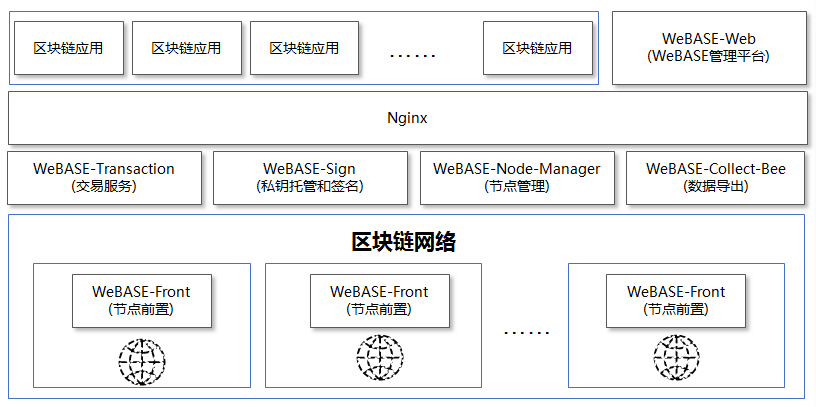
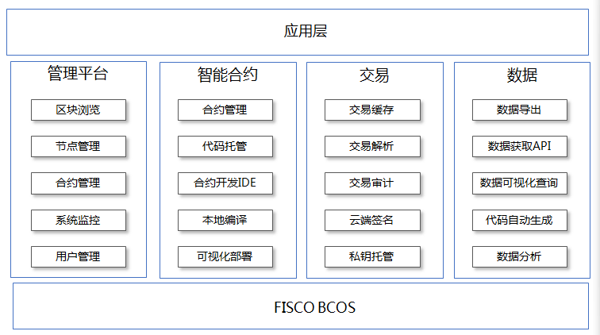
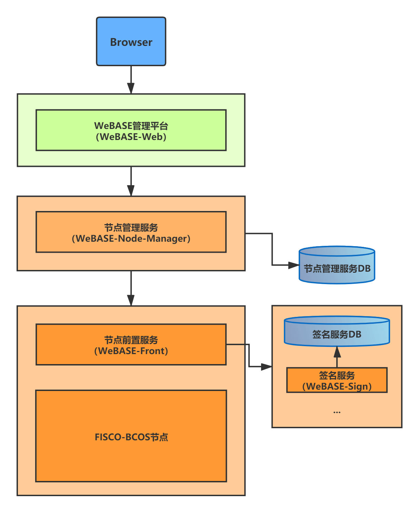
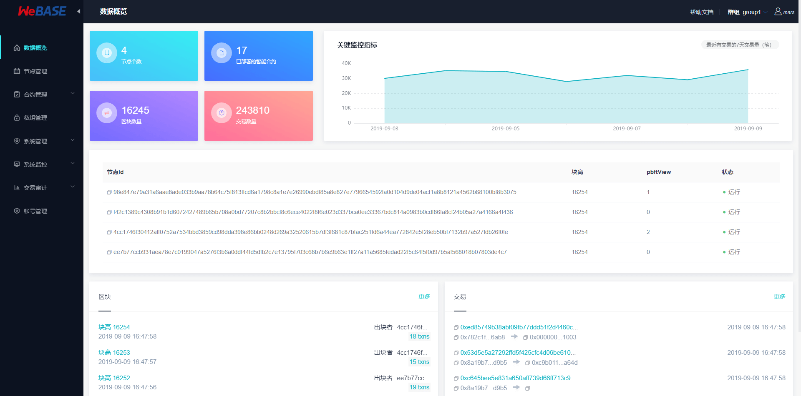
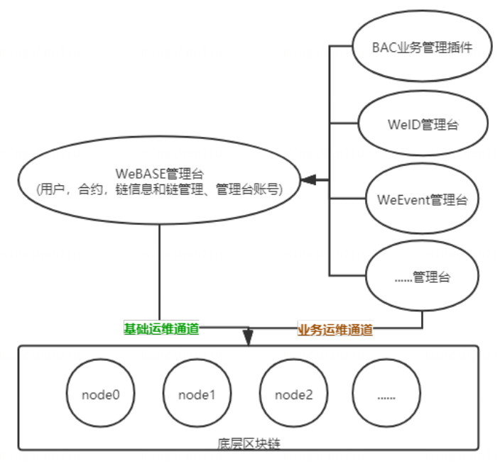
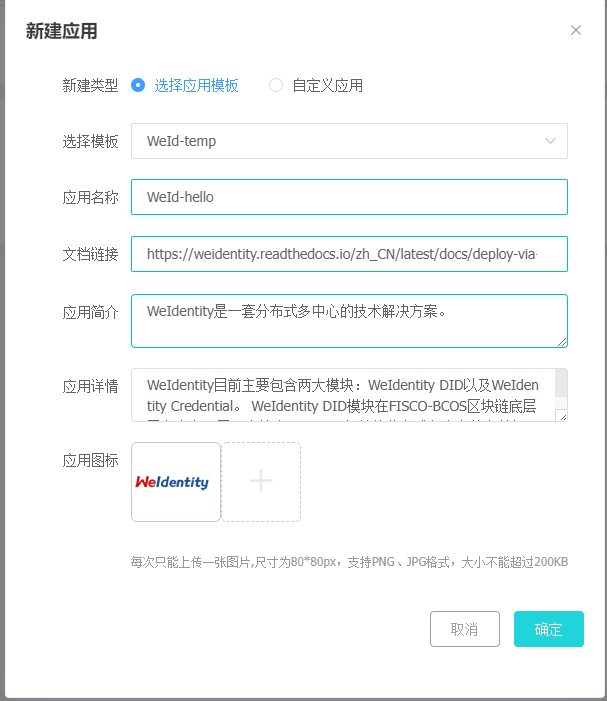

FISCO-WeBase
1 介绍
WeBASE(WeBank Blockchain Application Software Extension) 是在区块链应用和FISCO BCOS之间搭建的一套通用组件。 围绕
交易、合约、密钥管理、数据、数据可视化来设计各个模块，开发者可以根据业务所需，选择子系统进行部署。WeBASE屏蔽了区块链底层的复杂度，降低开发者的门槛，大幅提高区块链应用的开发效率，包括节点前置、节点管理、交易链路、数据导出、Web管理等子系统。
建立区块链应用开发标准
WeBASE将区块链应用开发标准化，按照部署、配置、开发智能合约、开发应用层、在线运维管理五个步骤既可以完成一个区块链应用的开发。https://webasedoc.readthedocs.io/zh_CN/latest/docs/WeBASE/quick-start.html
设计原则
按需部署: WeBASE抽象应用开发的诸多共性模块，形成各类服务组件，开发者根据部署所需组件
微服务: WeBASE采用微服务架构，基于Spring Boot框架，提供RESTful风格接口
零耦合: WeBASE所有子系统独立存在，均可以独立部署，独立提供服务
可定制: 前端页面往往带有自身的业务属性，因此WeBASE采用前后端分离的技术，便于开发者基于后端定义自己的前端页面。
整体架构
完整的部署如下，其中WeBASE-front需要和区块链节点同机部署。

功能介绍
从可视化，智能合约，交易，数据四个维度合计各个中间件，各模块主要功能如下

各子系统介绍
2 安装部署
2.1 快速入门搭建
1 | |
拷贝sdk证书文件（build_chain的时候生成的）
将节点所在目录nodes/${ip}/sdk下的所有文件拷贝到当前conf目录，供SDK与节点建立连接时使用（SDK会自动判断是否为国密，且是否使用国密SSL）
- 链的sdk目录包含了ca.crt, sdk.crt, sdk.key和gm文件夹，gm文件夹包含了国密SSL所需的证书
- 拷贝命令可使用cp -r nodes/${ip}/sdk/* ./conf/
- 注，只有在建链时手动指定了-G(大写)时节点才会使用国密SSL
1 | |
访问: http://localhost:5002/WeBASE-Front
一键部署
一键部署可以在 同机 快速搭建WeBASE管理台环境，方便用户快速体验WeBASE管理平台。
一键部署会搭建：节点（FISCO-BCOS 2.0+）、管理平台（WeBASE-Web）、节点管理子系统（WeBASE-Node-Manager）、节点前置子系统（WeBASE-Front）、签名服务（WeBASE-Sign）。其中，节点的搭建是可选的，可以通过配置来选择使用已有链或者搭建新链。一键部署架构如下：

1 | |
修改后的配置文件common.properties
1 | |
启动
1 | |
访问:
http://{deployIP}:{webPort}
示例：http://localhost:5000
用户名: admin 密码: Sxw123
WeBASE管理平台使用手册
概览
主要功能
- 区块链数据概览
- 节点管理
- 合约管理
- 私钥管理
- 应用管理
- 系统管理
- 系统监控
- 交易审计
- 订阅事件
- 账号管理
- 群组管理
- 移动端管理台
- 数据监控大屏

CNS查询：CNS（Contract Name Service）是通过提供链上合约名称与合约地址映射关系的记录及相应的查询功能，方便调用者通过记忆简单的合约名来实现对链上合约的调用。详情可查看FISCO-BCOS文档的 CNS方案
系统管理
系统管理目前支持权限管理、系统配置管理、证书管理的功能
权限管理
基于FISCO BCOS 2.5.0 及以上版本的基于角色的权限管理: 支持链委员会管理和运维管理员管理
- 链委员会管理: 链委员会的修改操作均需要通过多个委员会投票完成，链委员会拥有投票权，可以增删节点，修改链配置，添加撤销运维，冻结节约合约，对用户表的写权限控制；
- 修改委员会成员(新增、撤销委员)、修改委员会投票阈值、修改委员会投票权重等操作均通过投票进行修改。
- 投票阈值为投票生效的阈值，有效投票权重数/委员总权重数>生效阈值投票才能生效，阈值为开区间，即：投票权重比例必须大于阈值（不包含等于）；
- 每次投票操作，如果是委员投票，则记录操作内容和投票委员，不重复计票；
- 票设置过期时间，根据块高，blockLimit的10倍(即10000)，固定不可改；
- 用户不能同时成为链委员和运维管理员；
运维管理:
维由链委员直接赋予（无需通过投票赋予），运维可以部署合约、创建表、管理合约版本、冻结解冻本账号部署的合约；
注：链委员会为空时，不作链委员会权限限制，所有用户拥有委员权限，可以自由给自身或其他用户添加链委员权限；设置了第一个链委员后，非链委员用户无权限；请妥善保管链委员的私钥！
运维管理员为空时，所有用户拥有运维权限；同理，设置了第一个运维管理员后，非运维用户无权限；
FISCO-BCOS基于角色的权限管理机制详情可以参考文档使用手册-基于角色的权限控制，具体的设计原理可以参考文档 系统设计-基于角色的权限控制
https://fisco-bcos-documentation.readthedocs.io/zh_CN/latest/docs/manual/permission_control.html#id2
证书说明：
FISCO-BCOS证书说明可以参考FISCO-BCOS使用手册的证书说明
https://fisco-bcos-documentation.readthedocs.io/zh_CN/latest/docs/manual/certificates.html
应用管理
应用管理是WeBASE管理台提供的一种第三方应用接入功能。WeBASE作为底层运维平台，已经有了底层运维基础能力。各个应用可以利用这些基础能力来开发自己的运维管理台。这些可以利用的基础能力主要包括四个方面：1、链信息和链运维（权限，配置等）；2、合约；3、链的私钥账号；4、管理账号(登陆状态)

- 各应用的进程管理还是自我管理，避免WeBASE过于笨重
- WeBASE提供的是规范，方便其他应用参考打通应用与WeBASE的联系
- 如果有扩展，WeBASE也方便提供API来实现
- 不破坏各应用自身的完整性

https://weidentity.readthedocs.io/zh_CN/latest/docs/deploy-via-web.html
WeIdentity目前主要包含两大模块：WeIdentity DID以及WeIdentity Credential。 WeIdentity DID模块在FISCO-BCOS区块链底层平台上实现了一套符合W3C DID规范的分布式多中心的身份标识协议，使实体（人或物）的现实身份实现了链上的身份标识；WeIdentity Credential提供了一整套基于W3C VC规范的解决方案，旨在对这一类数据进行标准化、电子化，生成可验证、可交换的「凭证」（Credential），支持对凭证的属性进行选择性披露，及生成链上存证（Evidence）。
https://weidentity.readthedocs.io/zh_CN/latest/docs/deploy-via-web.html
交易审计
联盟链中各个机构按照联盟委员会制定的规章在链上共享和流转数据。这些规章往往是字面的，大家是否遵守缺乏监管和审计。因此为了规范大家的使用方式，避免链的计算资源和存储资源被某些机构滥用，急需一套服务来辅助监管和审计链上的行为。交易审计就是结合上面的区块链数据，私钥管理和合约管理三者的数据，以区块链数据为原材料，以私钥管理和合约管理为依据做的一个综合性的数据分析功能。 交易审计提供可视化的去中心合约部署和交易监控、审计功能，方便识别链资源被滥用的情况，为联盟链治理提供依据。
交易审计的主要目标:
- 用户交易总量数量统计： 监控链上各个外部交易账号的每日交易量
- 用户子类交易数量共计: 监控链上各个外部交易账号的每种类型的每日交易量
- 异常交易用户监控: 监控链上出现的异常交易用户(没有在区块链中间件平台登记的交易用户)
- 异常合约部署监控: 监控链上合约的部署情况，非白名单合约(没有在区块链中间件平台登记的合约)记录。
订阅事件
订阅事件管理: 可以查看前置中已订阅的链上事件通知，包括出块事件列表和合约Event事件列表。
本博客所有文章除特别声明外，均采用 CC BY-SA 4.0 协议 ，转载请注明出处！